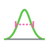
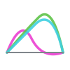
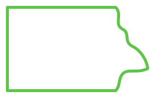
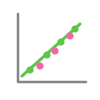
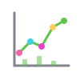

imgTKT.
A Quick Image Analysis Tool Kit
A small collection of browser-based tools for microscopy and scientific image analysis. Everything runs locally in your browser — images are never uploaded to a server.

Size Analysis
Draw a line across a feature, extract its intensity profile, and fit a Gaussian to measure FWHM. Loads multi-channel TIFF/OME-TIFF with a channel selector, plus LUTs, calibrated pixel size, and CSV export of measurements — which you can plot right away.

Line Profile
Draw a line across a multi-channel image and read out the intensity profile of every channel at once. Clean grid-free plot with per-channel colors, one-click CSV export, and send the data straight to the plotter.

ROI Inspector
Load multi-channel TIFF / OME-TIFF stacks with automatic channel detection. Place circular and rectangular ROIs to measure mean intensity per channel, then export the readings as CSV or plot them directly.

Correlations
Measure colocalization between any two channels — Pearson and Manders coefficients — within a freehand, circular, rectangular, or whole-image region. Record results, export as CSV, and plot them right away.

Plot Data
Plot the CSV / TSV data you export from any tool. Pick columns in the data table, then draw scatter, line, bar, histogram, or pie charts. Export the figure as PNG or the plotted values as CSV.